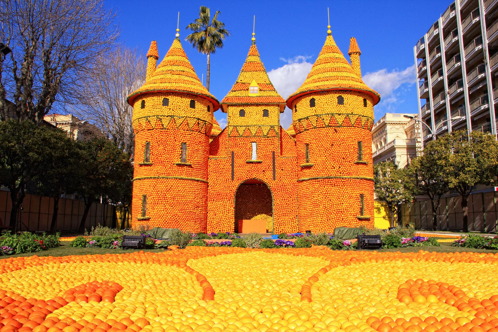

레몬 축제 사진
프랑스 망통 레몬 축제(Menton Lemon Festival )
대륙
유럽
국가
프랑스
지역
프랑스 프로방스알프코다쥐르 망통
장소
프랑스 망통,코트다쥐르
시기
매년 2월 중순~3월 초(약 3주간)
https://www.fete-du-citron.com/?lang=en/프랑스 망통 레몬 축제 공식사이트(영어)
프랑스 망통 레몬 축제(Menton Lemon Festival)는 프랑스 남부 코트다쥐르 지역의 망통에서 매년 2월 중순부터 3월 초 약 3주간 개최되는 세계적인 감귤류 축제입니다. 이 축제의 역사는 당시 1929년에 망통은 대륙 최고의 레몬 생산지였습니다. 한 호텔리어가 호텔 리비에라 정원에서 꽃과 감귤류 기획하는 아이디어에서 시작되었습니다. 전시회는 많은 사람들의 인기를 얻었고 도시 전체로 확산되었습니다. 이러한 성공은 1934년 처음으로 '레몬 축제'라는 이름으로 개최되었으며 이후 매년 2월마다 망통의 대표적인 겨울 축제로 열리고 있습니다. 축제기간 동안에는 메인 행사장인 비오베 정원을 비롯해 도시 곳곳에 수십 톤의 레몬과 오렌지와 레몬으로 장식한 거대하 조각 작품들이 전시됩니다. 또한 감귤류로 화려하게 꾸민 마차들이 행진하는 '황금과일 퍼레이드'와 밤하늘을 수놓는 야간 조명 쇼를 감상하 실 수 있습니다. 다채로운 볼거리가 전 세계 관광객들에게 상큼한 기분을 선사합니다.